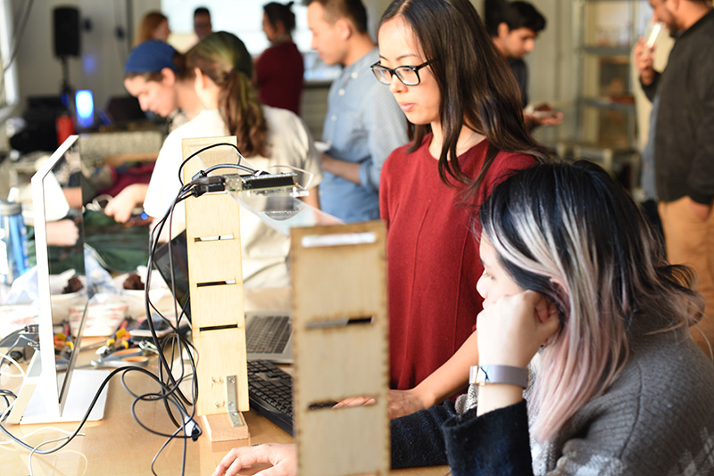
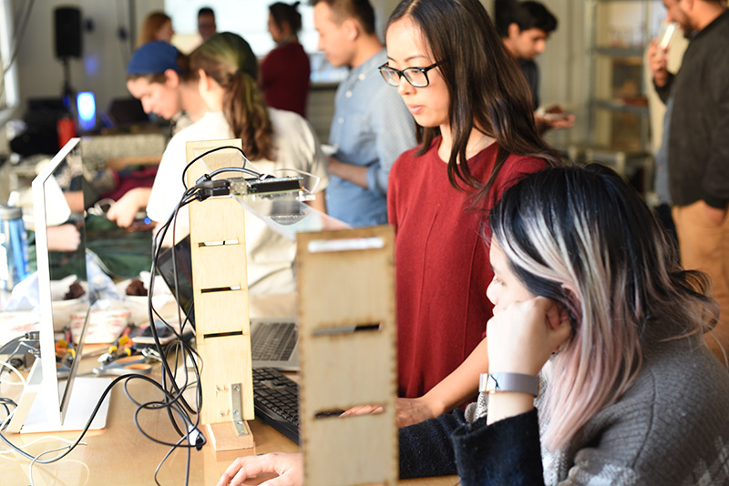

Classes
6.08 Interconnected Embedded Systems
Instructor: Joel Voldman (course creator), Joe Steinmeyer, Stefanie Mueller
When: every spring semester
Content: This course strives to expose its students to a breadth of EECS concepts by working within an infrastructure of mobile embedded systems, and engineering across different platforms.
Taught: spring 2018

6.S063 Engineering Interactive Technologies
Instructor: Stefanie Mueller (course creator)
When: every fall semester
Content: Teaches how to build cutting edge interactive technologies and provides an overview of each field. Topics covered include multitouch, augmented reality, haptics, wearables, brain computer interfaces, tangibles, fabrication, and more.
Taught: fall 2017
6.813
User Interface Design and Implementation
Instructor: Rob Miller (course creator), Stefanie Mueller
When: every spring semester
Content: Covers design principles, prototyping techniques, evaluation techniques, and the implementation of graphical user interfaces. Deliverables include short programming assignments and a semester-long group project.
Taught: spring 2017
 
